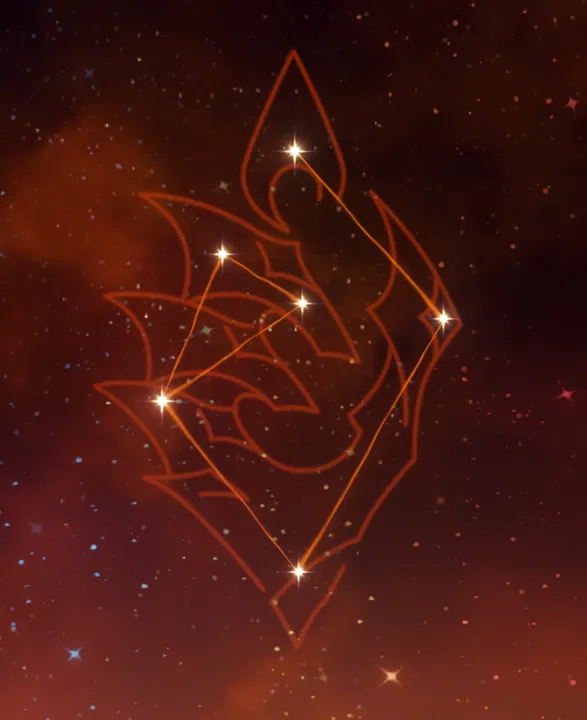
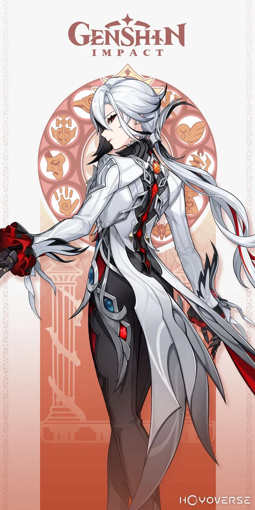
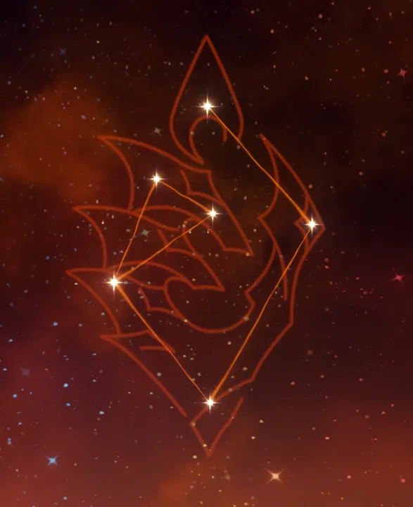
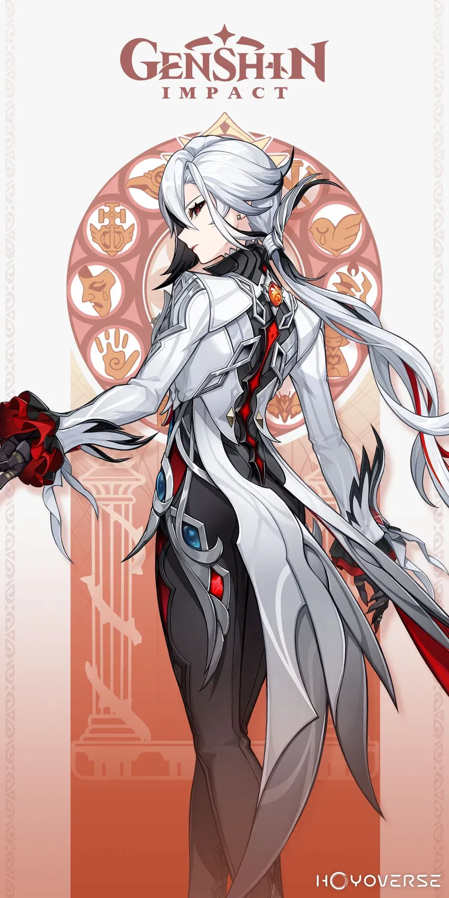

Arlecchino


La Sota, la cuarta de Los Once de los Fatui y una diplomática fría e implacable. Es el “padre” al que temen todos los niños de la Casa de la Hoguera, y de la cual también dependen.
Atributos

Nombre
Constelación
Visión
Chino CV
Japonés CV
Arlecchino
Ignis Purgatorius
Pyro
Huang Ying (黄莺)
Mori Nanako (森なな子)
Cumpleaños
Título
Afiliación
Inglés CV
Coreano CV
22/8
la Portadora Lunaciaga
Directora de la Casa de la Hoguera
Erin Yvette
Lee Myung-hee (이명희)
Galeria
Tarjeta

 



Vestimenta original - Luz lunar
Modelo de vestimenta de Arlecchino. La antigua luna aciaga se alza una vez más desde los sueños, arrojando un frío resplandor carmesí que la envuelve por completo. Con esta luz lunar como testigo, beberá ávidamente del cáliz de la vida hasta que su sinuoso destino llegue a su fin.
Talentos

Ataque Normal: Invitación a una decapitación
Ataque Normal
Realiza hasta 6 ataques rápidos con lanza.
Ataque Cargado
Consume una cierta cantidad de Aguante para arremeter contra un enemigo cercano y ejecutar un tajo. Al mantener pulsado, Arlecchino se moverá rápidamente durante un máximo de 5s mientras consume Aguante de forma continuada.
Ataque Descendente
Se lanza desde el aire para golpear el suelo, dañando a los enemigos cercanos e infligiendo Daño en el AdE en el momento del impacto.
Mascarada de la muerte roja
Cuando el pacto vital que tenga Arlecchino sea superior o igual al 30% de su Vida Máx., entrará en el estado de “mascarada de la muerte roja”, lo que causará que sus Ataques Normales, Cargados y Descendentes se conviertan en Daño Pyro, el cual no puede sustituirse imbuyéndose de otro elemento. Cuando Arlecchino golpea a un enemigo con un Ataque Normal mientras se encuentra en el estado de mascarada de la muerte roja, el daño de dicho ataque aumenta en una cantidad equivalente a cierta proporción del porcentaje del pacto vital actual multiplicado por el ATQ de Arlecchino, y se consumirá un 7.5% del valor de dicho pacto vital. Solo se podrá consumir parte del pacto vital cada 0.03s de esta manera. Al consumir parte del pacto vital de esta forma, el TdE de la Habilidad Elemental “Que todo sea cenizas” se reduce en 0.8s.

Que todo sea cenizas
Libera unas llamas lunaciagas que infligen
Decreto deudosangriento
·Tiene una duración de 30s. Cada 5s, inflige Daño Pyro a los enemigos afectados por él hasta un máximo de 2 veces. Este daño se considera Daño de Habilidad Elemental. ·Cuando Arlecchino usa un Ataque Cargado o la Habilidad Definitiva, “Ascenso lunaciago”, absorbe y elimina los decretos deudosangrientos cercanos y, por cada uno de ellos, obtiene un valor de pacto vital equivalente al 65% de su Vida Máx. ·Durante 35s tras usar su Habilidad Elemental, Arlecchino podrá obtener como máximo un pacto vital equivalente al 145% de su Vida Máx. a través de los decretos deudosangrientos. Al volver a usar la Habilidad Elemental en esa franja de tiempo, se reiniciará la duración y el valor máximo del pacto vital otorgado por el decreto deudosangriento. En su opinión, no todos los granos de trigo que caen al suelo acaban convirtiéndose en espigas; a veces, simplemente se pudren sin hacer ruido alguno. No obstante, una vez que quienes se interponen en su camino se han convertido en cenizas, pueden servir como abono para las flores.

Ascenso lunaciago
Arlecchino bate un ala de llamas lunaciagas, con lo que absorbe y elimina los decretos deudosangrientos cercanos, inflige
En Teyvat se cree que, excepto la luna llena, las demás fases de la luna son símbolos de mal presagio usados únicamente por alquimistas y astrólogos. Así pues, ¿que ella haya soñado múltiples veces con una luna carmesí es un presagio de catástrofes que están por venir? Lo es, pero tales desdichas les están predestinadas a quienes la hacen enfurecer.
Solo el sufrimiento podrá redimir
El decreto deudosangriento adquiere las siguientes características: ·Al derrotar a un enemigo afectado por un decreto, Arlecchino obtiene un pacto vital del 130% de su Vida Máx. ·5s después de aplicar un decreto deudosangriento, este asciende a “decreto deudosangriento vinculante” y, al absorberlo, Arlecchino obtiene un pacto vital del 130%. Al obtener un pacto vital por medio de alguna de las anteriores formas, su valor máximo no podrá ser superior al límite original de Que todo sea cenizas.
Solo la fuerza podrá proteger
Todas las RES Elementales y la RES Física de Arlecchino aumentan en un 1% por cada 100pts. de ATQ que tenga por encima de los 1000pts. Como máximo, todas las RES Elementales y la RES Física de Arlecchino pueden aumentar en un 20% de esta manera.
Solo la luna aciaga podrá saber
Mientras Arlecchino está en combate, obtiene un 40% de